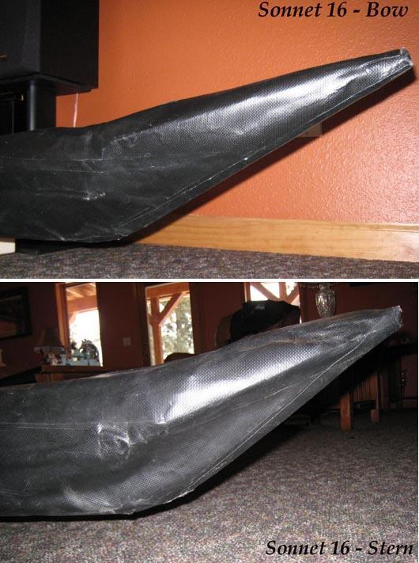

| Sonnet (Deck Stems) | Menu Last Page Next Page |
|

Deck Stems
The deck and hull skin overlap at about 12" to 18" (304mm - 457mm) from the stems. The hull skin is wrapped around the peak of the deck, trimmed and glued to the skin on the opposite side . This will take some trimming and fitting, and may require additional PVC be added to cover any gaps in the skin. This is one area where there are no absolute solutions. At the ends, trim the the tip and cover this area with a small piece of PVC. A plug is also an option as it can be removed after paddling for water drainage if required. Next, install the coaming.
|
|